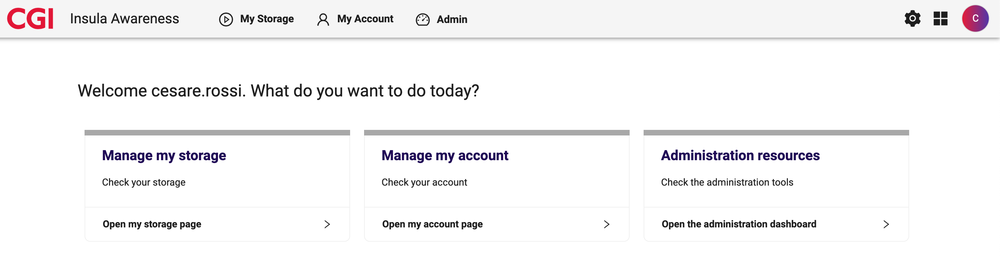
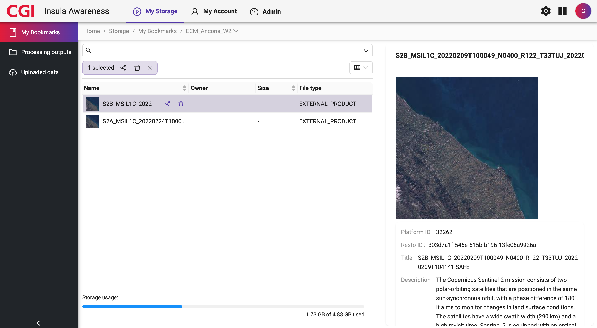
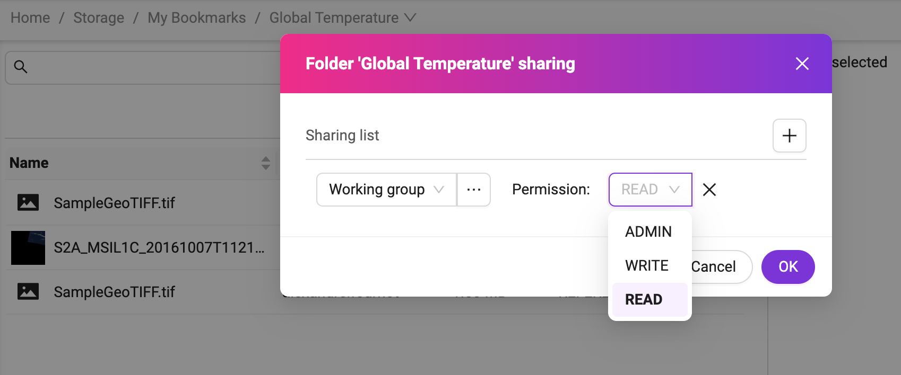
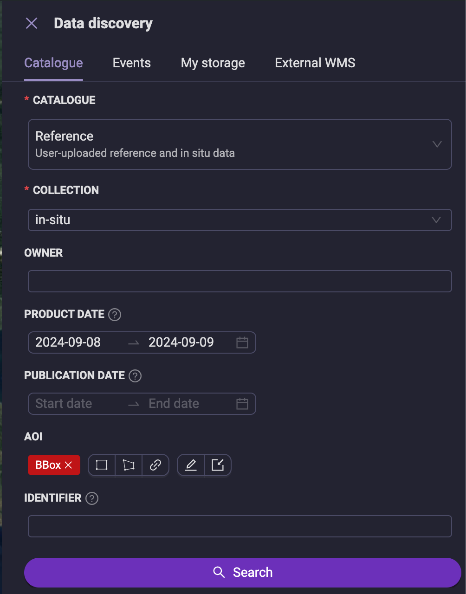
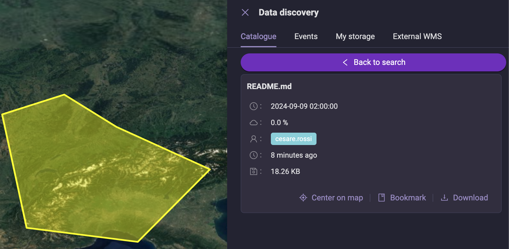
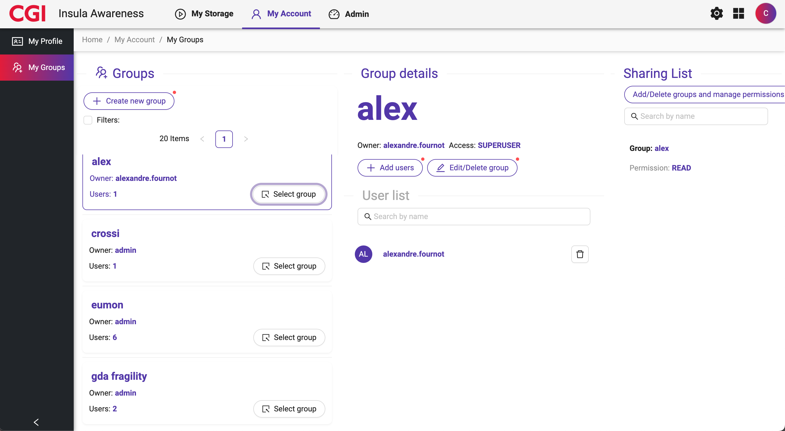

Insula Awareness🔗
Insula Awareness is available at <base_url>/awareness and allows you to:
Manage your storage and sharing options.
Manage your own account details, including quotas and transactions.
When accessing Insula Awareness, it provides a screen similar to:
Manage my storage🔗
It is a way to explore the available storage options, that is:
My Bookmarks, a way to organize and keep track of heterogeneous data.
Processing Outputs, the output of processing services.
Uploaded Data, collections of custom data (e.g., in-situ data), uploaded by the users.
To access the service:
Click on Open my storage page.
See the different options available (see image below).
My Bookmarks🔗
My Bookmarks is a way to organize and keep track of heterogeneous data. You can think about them as a folder of references or links to data. The following is an example:
The bookmark Global Temperature in the example above contains references to:
an OUTPUT_PRODUCT (i.e., the result of a processing service),
an EXTERNAL_PRODUCT (i.e., remote data contained in a Data Catalog),
a REFERENCE_DATA (i.e., data uploaded by the user).
The bookmark itself can be shared with other users setting the proper permissions. For example:
{kind=link}
TIP: A bookmark can be used as an input of a compatible processing service, to process an arbitrary set of data (e.g., sparse data from a Data Catalog).
Processing outputs🔗
This type of storage is related to the outputs of processing services. It is a set of collections of data, or folders.
Insula Awareness provides a way to manage these collections, in particular:
to share them, similarly to My Bookmarks,
to set a download cost. This is a particularly useful option when a dataset is shared within Insula, and the owner wants to decide the cost of downloading its content (please note that no revenue models are currently supported),
to download data from the collection,
to remove data from the collection.
Uploaded data🔗
You can upload data on the platform and use it for visualisation or processing purposes. Similarly to Processing outputs, these data is organized in collections, or folders, and Insula Awareness allows:
to share them, similarly to My Bookmarks,
to set a download cost, as for Processing outputs,
to download data from the collection,
to remove data from the collection.
When uploading data, it is possible to define additional metadata to them, such as:
Title
Description
Additional metadata, that is a JSON object with arbitrary information
Geometry
Time
To upload data:
- Create a folder, if it does not exist already. Click on the New folder button (the one with the ‘+’ sign).
Provide Name, Description, and Data type. Data type can be Generic or Raster mosiac. In the latter case, compatible data will be stored in an ImageMosaic. This could be useful to assemble a set of overlapping geospatially rectified images into a contiguous image.
Within the folder, click on the Upload data button.
Drag and drop a file or click to select one from your local filesystem.
Define additional metadata, if needed. See the example below.
{kind=link}
Discover uploaded data using Insula Perception🔗
As in the previous example we provided two essential metadata for the data discovery, time and spatial information, data can be easily discoverable in Insula Perception. For example, here below you can see how the data jsut uploaded can be discovered and visualised:
 {kind=link}
{kind=link}
File type🔗
File type determines the way Insula will process the uploaded data. The available options are:
GeoTiff. In such a case Insula Awarenesswill try to automatically extract the available information from this type of raster data, and ingest it for visualisation, storing it as a Layer.
Shapefile (zip). In such a case Insula Awareness will try to automatically extract the available information from this type of vectorial data, and ingest it for visualisation, storing it as a Layer.
Mosaic. In such a case Insula Awareness will try to automatically extract the available information from the data, and ingest it for visualisation, storing it in an ImageMosaic.
Other. Insula Awareness will not try to extract any information from this file type.
Manage my account🔗
Manage my account allows to get details about:
Your account
Your quotas and subscriptions
Your transactions
Your groups
My profile🔗
From the Insula Awareness landing page, cLick on Open my account page,
Click on My profile,
See a page similar to:
Account info🔗
This section provides an overview of your account details:
Username: your unique identifier associated with your account.
Role: your role, determining the privileges within Insula Perception, Insula Intellect, and Insula Awareness.
ID: your unique integer identifier associated with your account. This might be useful when using the API (not supported at the moment)
Credits Balance: representing your available credits for using certain features.
Quota and Subscriptions🔗
This section provides information about your storage quota and any active subscriptions.
Used storage: Provide details on your storage limitations, e.g., total space allocated or remaining space.
Max runnable jobs: List any active subscriptions you have, e.g., for additional storage or premium features.
Persistent storage folder will be soon deprecated.
Other features🔗
My profile offers also:
Export Resource: This allows you to export your data for backup or accounting purposes.
Transaction History: Here you can view your past transactions and track your credit usage.
My groups🔗
My groups allows you to create, edit, and manage user groups within the application.
From the Insula Awareness landing page, cLick on Open my account page,
Click on My groups.
By selecting one of them, it is possible to add/remove users to the group or edit/delete it.
